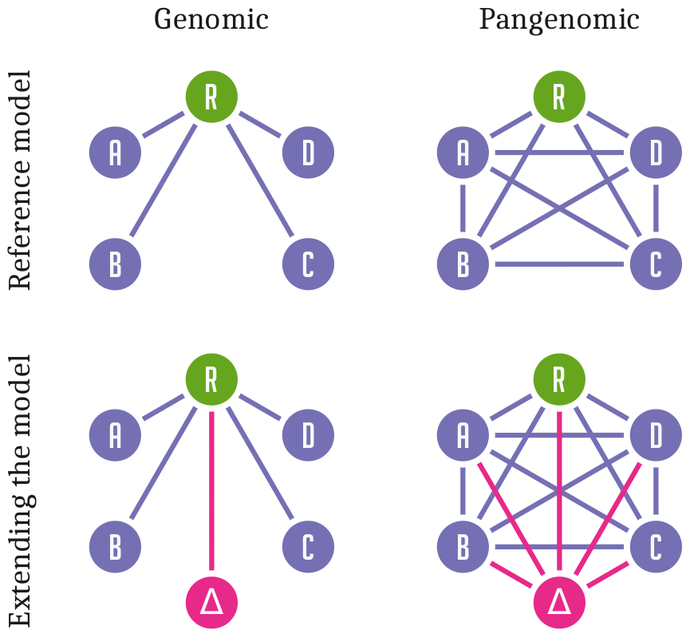
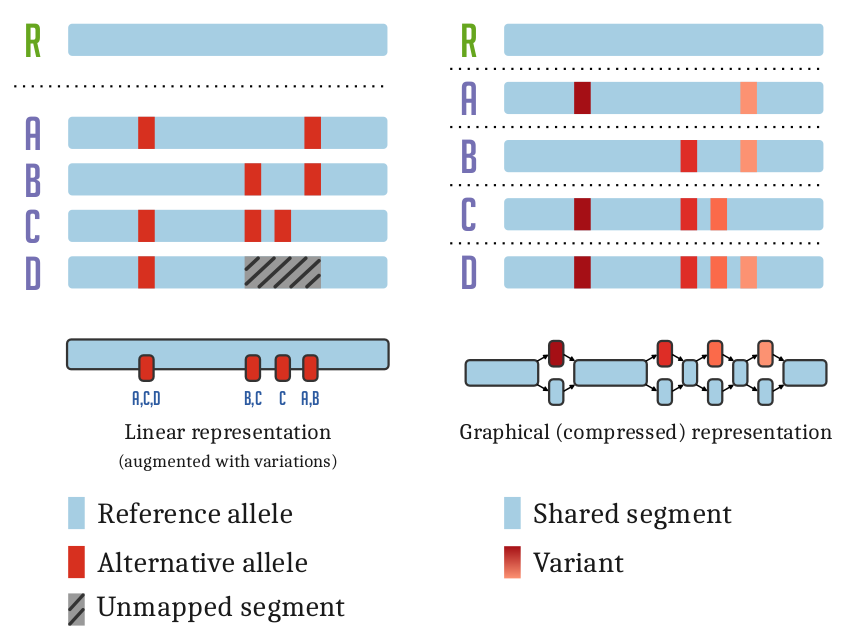
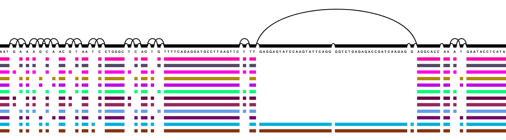

Practical Graphical Pangenomics
tools and workflows based on genome variation graphs
Standard approaches to genome inference and analysis relate sequences to a single linear reference genome.
This is efficient but has a fundamental problem:
Differences from this reference are hard to observe and describe in a coherent way.
Variation and sequence are separated.


Pangenomic methods allow us to relate all genomes or sequences in our analysis directly to each other.
Sequence and variation are combined into a coherent data structure.
This practice is still new, and research into ways to design, implement, and apply this model is ongoing.
However, there is a growing consensus around best practices.
Many methods work on an augmented sequence graph model and use a handful of common data formats for input and
output.
The variation graph data model describes the all-to-all alignment of many sequences (genomes or genes for
instance) as walks through a graph whose nodes are labeled with DNA sequences:

Here, we document tools and workflows that operate on this graphical pangenomic data model.
Our goal is to provide greater clarity for students and scientists working with this new paradigm for genomic
research.
vg
The variation graph toolkit
vg provides computational methods for creating and manipulating of genome variation graphs. It's pangenome representation of a set of genomes overcomes reference bias and improves read mapping.
This is highlighted in the
Nature Biotechnology publication.
Users can receive support on
vg's Biostars page.
xg
The succinct graph index
xg presents a static index of nodes, edges and paths of a variation graph.
xg can be used to annotate graph nodes with their reference path relative positions.
It was a key component of early development in
vg, and was use to scale short read mapping to large genomes.
It implements the
libhandlegraph API.
odgi
odgi, the Optimized Dynamic (genome) Graph Interface, links a thrifty dynamic in-memory variation graph data model to a set of algorithms designed for scalable sorting, pruning, transformation, and visualization of very large genome graphs.
odgi includes
python bindings that can be used to
directly interface with its data model..
The
odgi manual provides detailed information about its features and subcommands, including examples.
GWBT
GWBT - Graph BWT
is a substring index for paths in a
variation graph.
It is based on the positional Burrows-Wheeler transform (PBWT) and independently implements its graph extension (gPBWT).
The
GBWT supports extreme compression of genome sequences, requiring only 1 bit per 1 kilobasepair of sequence to store a 1000 Genomes Project.
For documentation see the
GBWT wiki.
spodgi
SpOdgi transforms any
odgi genome variation graph file into a SPARQL capable database.
The RDF semantics are described in the
vg ontology directory.
This transformation allows us to connect variation graphs to other RDF resources, supporting their query using logic programming.
Many operations or queries that are implemented in custom code in other pangenome tools can be expressed in compact SPARQL queries executed against
SpOdgi.
seqwish
The alignment to variation graph inducer
seqwish renders a set of sequences and alignments into the equivalent variation graph.
It accomplishes this using a number of tricks to reduce its memory footprint while maintaining a high degree of parallelism.
The result is entirely dependent on the input alignments, which it represents losslessly.
seqwish is generic: it can induce variation graphs from a collection of human genomes, or a set of noisy nanopore reads.
Sequence Tube Map
Sequence Tube Map is a javascript module visualizing variation graphs in a
tube-map-like layout.
It renders variation graphs using a "tube map" model in which paths representing genomes flow through the sequence nodes of the graph.
Currently, it can only handle graphs created with
vg.
Pantograph
The
Pantograph project
aims to build an interactive pangenome visualization tool for COVID-19 data that includes annotation and metadata.
On the long run, it should be capable to visualize a pangenome of 1,000s of individuals and gigabase genomes,
scaling from nucleotide to whole chromosome level.
Bandage
Originally developed for assembly graph visualization,
Bandage is an indispensable tool for visual inspection of variation graphs as well as assembly graphs.
{kind=link}
{kind=link}
{kind=link}